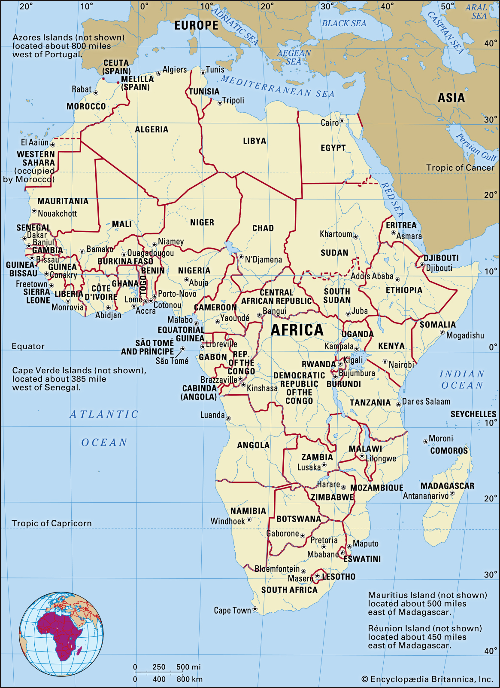

Africa is the world's second-largest and second-most populous continent, after Asia in both cases. At about 30.3 million km2 (11.7 million square miles) including adjacent islands, it covers 6% of Earth's total surface area and 20% of its land area.[4] With 1.3 billion people[1][2] as of 2018, it accounts for about 16% of the world's human population. Africa's population is the youngest amongst all the continents;[5][6] the median age in 2012 was 19.7, when the worldwide median age was 30.4.[7] Despite a wide range of natural resources, Africa is the least wealthy continent per capita, in part due to geographic impediments,[8] legacies of European colonization in Africa and the Cold War,[9][10][11][12][13] undemocratic rule and deleterious policies.[8] Despite this low concentration of wealth, recent economic expansion and the large and young population make Africa an important economic market in the broader global context.

The continent is surrounded by the Mediterranean Sea to the north, the Isthmus of Suez and the Red Sea to the northeast, the Indian Ocean to the southeast and the Atlantic Ocean to the west. The continent includes Madagascar and various archipelagos. It contains 54 fully recognised sovereign states (countries), eight territories and two de facto independent states with limited or no recognition. Algeria is Africa's largest country by area, and Nigeria is its largest by population. African nations cooperate through the establishment of the African Union, which is headquartered in Addis Ababa.
The continent is surrounded by the Mediterranean Sea to the north, the Isthmus of Suez and the Red Sea to the northeast, the Indian Ocean to the southeast and the Atlantic Ocean to the west. The continent includes Madagascar and various archipelagos. It contains 54 fully recognised sovereign states (countries), eight territories and two de facto independent states with limited or no recognition. Algeria is Africa's largest country by area, and Nigeria is its largest by population. African nations cooperate through the establishment of the African Union, which is headquartered in Addis Ababa.